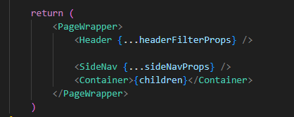
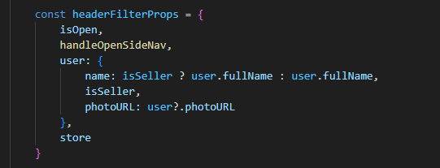
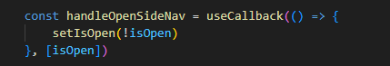
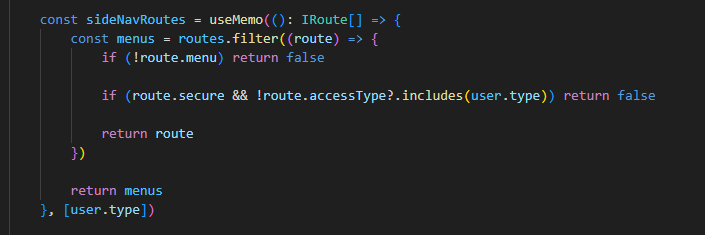

2.4- Header e Menu de navegação do Aplicativo
Além do controle de navegação, visto na seção Roteamento de páginas, existe um componente padrão, chamado Layout, que produz a exibição de um Header, na parte superior da tela, e de um Menu de Navegação lateral, no lado esquerdo da tela, o qual também participa do controle de navegação de páginas padrão, do aplicativo.
Este componente é definido pelo código mantido na pasta /src/components/layout.
O componente principal é, como vimos, o componente Layout, definido no arquivo /src/components/Layout/index.tsx.
Essencialmente, este componente, renderiza os componentes vistos na figura abaixo.

-
Header, definido na pasta /src/components/Layout/components/Header, cuja função é exibir na parte superior da tela o ícone do aplicativo e informações do usuário logado, avatar, nome e outras, que estejam salvas no store redux do aplicativo.
-
SideNav, definido na pasta /src/components/Layout/components/SideNav, cuja função é exibir na lateral esquerda da tela um menu que dá acesso a um grupo específico de telas do aplicativo.
-
Container, como o nome indica, o componente Container é apenas um recipiente do tipo styled component para envolver o componente React que houver sido definido para a tela corrente, passado para o componente Layout no parâmetro children.
A propriedade headerFilterProps, passada para o componente Header é definida com o seguinte objeto

Este objeto, configura:
- Se o menu lateral está visível, ou não, através da propriedade isOpen.
- Como e quando o menu lateral será exibido ou escondido, em função do comportamento da função handleOpenSideNav, que no caso padrão, é definida assim:

- Os dados padrão do usuário, o nome e seu avatar, através da propriedade user.
- Dados adicionais salvos no store redux, através da propriedade store.
Por fim, a propriedade sideNavProps, passada para o componente SideNav, determina quais páginas do aplicativo (definidas no arquivo /src/routes/routes.ts) serão exibidas como links no menu lateral, em função da propriedade menu ser true ou false, e faz também o controle de acesso do usuário logado a estas telas, em função dos perfis listados no usuário corrente e dos perfis listados na propriedade route.userType da respectiva página. Vide código abaixo.
